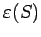

Inhalt Index DeskTop Bronstein

 Algebra und Diskrete Mathematik Algorithmen der Graphentheorie
Algebra und Diskrete Mathematik Algorithmen der Graphentheorie


Eine Funktion die jedem Bogen eine reelle Zahl zuordnet, heißt Strom auf G, wenn für jeden Knoten v die Gleichung
| (5.349a) |
gilt. Die Summe
| (5.349b) |
heißt Stromstärke. Ein Strom  heißt mit den Kapazitäten verträglich, wenn für jeden Bogen ui von G gilt:
heißt mit den Kapazitäten verträglich, wenn für jeden Bogen ui von G gilt:
| Beispiel |
Wird die Senke S von G markiert, dann läßt sich der Strom in G um  verbessern. Wird die Senke nicht markiert, dann ist der Strom maximal.
| Beispiel |
|
Maximalstrom: Im Graphen der oberen Abbildung geben die Bewertungen der Kanten die Kapazitäten der Kanten an. Im bewerteten Graphen der unteren Abbildung ist ein mit diesen Kapazitäten verträglicher Strom der Stärke 13 dargestellt. Es handelt sich dabei um einen Maximalstrom. |